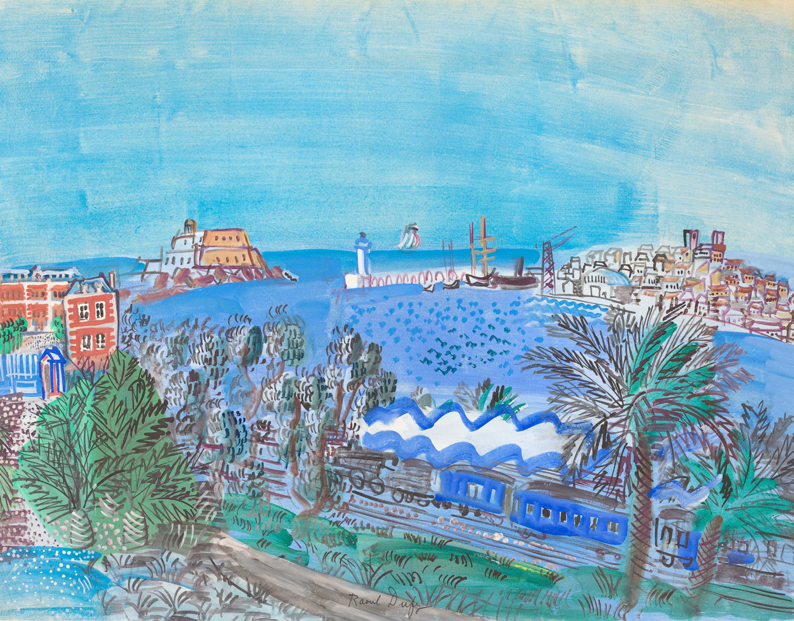

마무리하기 수채화물감의 특성을 생각하며 작품을 감상해 봅시다.

뒤피(Dufy, Raoul/프랑스/1877~1953)
「파란 기차」 (종이에 수채화물감/50×65 cm/1935년 작)
저는 색과 빛의 화가라고 불리는 미술가 뒤피예요. 「파란 기차」는 수채화물감을 사용하여 자유로운 선의 율동을 표현했어요.
정답
색이 재미있고 다양하게 번진 색깔이 멋져.
정답
색을 겹겹이 칠한 부분이 재미있어.
정답
친구와 서로의 그림을 감상하고 어울리는 제목을 지어 주면 어떨까?
정답